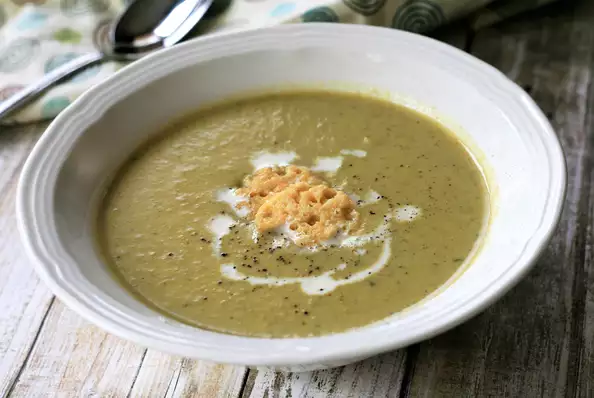

Cream of Thyme Asparagus Soup

Ingredients
- 1 tablespoon olive oil
- 2 small onions, choppede
- ½ cup chopped mushrooms, or to taste
- ½ cup chopped mushrooms, or to taste
- 1 teaspoon minced garlic, or to taste
- 1 bunch asparagus, trimmed and coarsely chopped
- ⅓ cup dry white wine (Optional)
- ¼ cup dry white wine
- 2 dashes dried thyme, or more to taste
- 1 dash ground black pepper
- 3 cups vegetable broth, or more to taste
- ½ cup heavy cream
Directions
Step 1
- Heat olive oil in a saucepan over medium heat.
- Add onions, mushrooms, and garlic; cook and stir until onions soften, about 5 minutes.
- Add asparagus, wine, thyme, and black pepper; cook and stir until asparagus is tender, about 5 minutes.
- Pour in 2 cups broth.
- Simmer soup until flavors combine, 5 to 10 minutes.
Step 2
- Heat olive oil in a large skillet over medium-high heat.
- Add chicken and cook for 5 minutes.
Step 3
- Puree soup with an immersion blender until smooth.
- Stir in cream.
- Thin soup with remaining stock to desired consistency and simmer until heated through, 5 to 10 minutes.
Nutritional Facts
Per Serving: 215 calories; protein 4.7g; carbohydrates 13.9g; fat 15g; cholesterol 40.8mg; sodium 362.2mg
Back to main recipe page